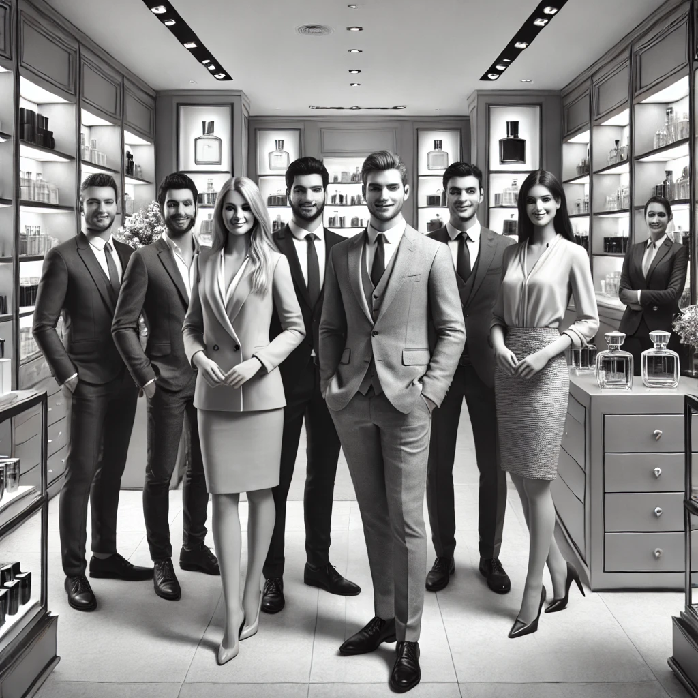

Unser engagiertes Team: Die Duft-Experten hinter Luxuria
Das Team der Parfümerie Luxuria besteht aus engagierten und erfahrenen Fachleuten, die ihre Leidenschaft für Düfte teilen. Jeder Mitarbeiter bringt seine eigene Expertise und Kreativität mit, um Ihnen ein außergewöhnliches Erlebnis zu bieten. Unser Team ist bestrebt, Sie bei der Auswahl des perfekten Duftes zu unterstützen und steht Ihnen mit Rat und Tat zur Seite.
Eine Duftreise: Die Geschichte der Parfümerie Luxuria
Die Geschichte der Parfümerie Luxuria beginnt vor über zwei Jahrzehnten, als wir unsere Türen zum ersten Mal öffneten. Gegründet wurde das Unternehmen von einem visionären Parfümliebhaber, der es sich zur Aufgabe gemacht hatte, einzigartige und luxuriöse Düfte aus aller Welt zu präsentieren. Mit der Zeit wuchs unser Sortiment, und wir konnten exklusive Marken und seltene Düfte in unser Angebot aufnehmen.
Heute sind wir stolz darauf, eine der führenden Parfümerien der Region zu sein, die für ihre exklusive Auswahl und ihren erstklassigen Service bekannt ist. Unser Ziel war und ist es, jedem Kunden ein unvergessliches Dufterlebnis zu bieten, das noch lange nach dem Besuch bei uns nachwirkt.